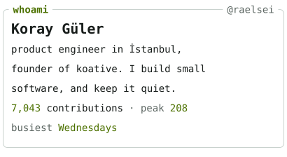

<!doctype html>
<meta charset="utf-8">
<title>afterglow preview</title>
<style>
body{margin:0;padding:32px 16px;background:#fff;font:16px/1.5 -apple-system,BlinkMacSystemFont,"Segoe UI","Noto Sans",Helvetica,Arial,sans-serif}
@media (prefers-color-scheme:dark){body{background:#0d1117}}
article{max-width:846px;margin:0 auto}
img{max-width:100%;box-sizing:content-box}
img[align=left]{padding-right:20px}
img[align=right]{padding-left:20px}
</style>
<article>
<!-- afterglow:start -->
<p>
<a href="https://koray.dev/posts/"><picture><source media="(prefers-color-scheme: dark)" srcset="./year-compact-d0c17dee-dark.svg"></picture></a><a href="https://koray.dev"><picture><source media="(prefers-color-scheme: dark)" srcset="./whoami-compact-5b20be3e-dark.svg"></picture></a><br>
<a href="https://koray.dev/posts/"><picture><source media="(prefers-color-scheme: dark)" srcset="./posts-head-6d097549-dark.svg"></picture></a><br>
<a href="https://koray.dev/posts/llm-cannot-hallucinate-what-you-never-sent/"><picture><source media="(prefers-color-scheme: dark)" srcset="./post-41b340fb-dark.svg"></picture></a><br>
<a href="https://koray.dev/posts/cache-the-prompt-not-the-inputs/"><picture><source media="(prefers-color-scheme: dark)" srcset="./post-754b2fcc-dark.svg"></picture></a><br>
<a href="https://koray.dev/posts/fire-and-forget-on-cloudflare-workers/"><picture><source media="(prefers-color-scheme: dark)" srcset="./post-0ab7c1b8-dark.svg"></picture></a><br>
<a href="https://koray.dev/posts/what-a-non-extractable-key-protects/"><picture><source media="(prefers-color-scheme: dark)" srcset="./post-9d00ae5f-dark.svg"></picture></a><br>
<a href="https://koray.dev/posts/the-page-cache-we-deleted/"><picture><source media="(prefers-color-scheme: dark)" srcset="./post-60289f4b-dark.svg"></picture></a><br>
<a href="https://koray.dev/posts/"><picture><source media="(prefers-color-scheme: dark)" srcset="./posts-foot-0272a7f9-dark.svg"></picture></a><br clear="all">
<a href="https://koray.dev"><picture><source media="(prefers-color-scheme: dark)" srcset="./bar-session-7df00a59-dark.svg"></picture></a><a href="https://koray.dev"><picture><source media="(prefers-color-scheme: dark)" srcset="./bar-link-8843abba-dark.svg"></picture></a><a href="https://x.com/raelsei"><picture><source media="(prefers-color-scheme: dark)" srcset="./bar-link-3ef2d4dc-dark.svg"></picture></a><a href="https://linkedin.com/in/raelsei"><picture><source media="(prefers-color-scheme: dark)" srcset="./bar-link-c6382a24-dark.svg"></picture></a><a href="https://t.me/raelsei"><picture><source media="(prefers-color-scheme: dark)" srcset="./bar-link-78f1e19a-dark.svg"></picture></a><a href="mailto:hello@koray.dev"><picture><source media="(prefers-color-scheme: dark)" srcset="./bar-link-497b3d5d-dark.svg"></picture></a><a href="https://github.com/raelsei/afterglow"><picture><source media="(prefers-color-scheme: dark)" srcset="./bar-clock-8f7cebb3-dark.svg"></picture></a><br clear="all">
</p>
<!-- afterglow:end -->
</article>
